clear all
set more off
// Load the data
use "data/Dehejia_Wahba_2002.dta", clear
// Generate a number of additional variables
gen age2 = age*age
gen age3 = age*age*age
gen educ2 = education*education
gen u74 = (re74!=0)
gen u75 = (re75!=0)
gen edure74 = education*re74
// Mark observational and experimental data sets
gen observational = data_id=="CPS1"|treat==1
gen experimental = data_id=="Dehejia-Wahba Sample"Chapter 3
Code Call-out 3.1 - Propensity Score Matching and Job Training Programs
In this code call-out we will consider a setting originally studied by LaLonde (1986). LaLonde (1986) examines the experimental analysis of the National Supported Work (NSW) experiment. This was an experimentally evaluated work training program in which individuals were (randomly) assigned to treated groups which participated in the approximately 12 month long program, and a control group in which units were assigned to a control condition. Because there is an experimental evaluation, the effect of treatment is known, and LaLonde (1986) sought to document how the effect estimated from observational estimators in which the NSW treated group is compared to “control” groups drawn from large surveys. LaLonde (1986) documents that often these observational methods did quite poorly in approximating the true treatment effect.
This example was revisited by Dehejia and Wahba (2002), Dehejia and Wahba (1999). In this case, the authors consider the same treated group from the experiment, and estimate treatment effects matching it to a control group drawn from the same large surveys (specifically, the CPS and PSID from the United States). They note that when a propensity score matching procedure is used and when matching is based on a series of variables including salaries in the pre-treatment period, the observational methods actually do a reasonably good job in approximating the true experimental estimate. Here we use the same data from Dehejia and Wahba (2002), seeking to replicate their Table 2 which shows how estimates vary based on the particular nature of propensity score matching used. In particular, they consider a range of nearest neighbour methods without replacement, as well as methods with replacement, and with calipers of varying sizes.
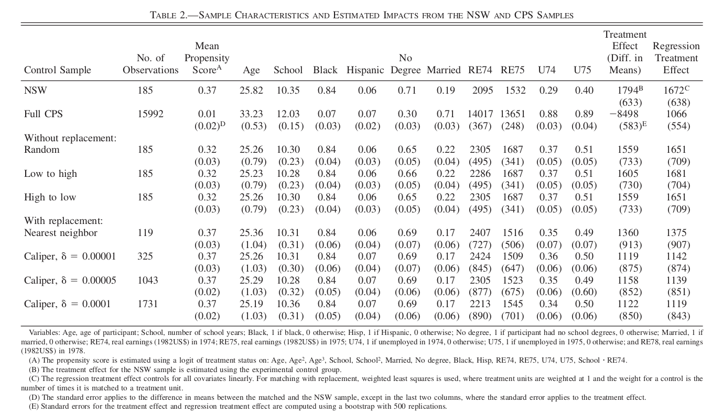
Below we will open the data provided by Dehejia and Wahba (2002) and begin working with it. These data actually consist of both the NSW experimental implementation (marked as data_id="Dehejia-Wahba Sample"), as well as the survey data (marked as data_id="CPS1"). Among the NSW sample, there will be both treated and control units (indicated by treat), whereas among the CPS data, there will be no treated units. Our goal will then be to discard the control units from the NSW sample, and seek to generate a control group using propensity score matching. Along with information on individuals’ participation in the program (treat), the dataset contains information about their earnings in 1978 (re78) which follows program participation (in the case of treated observations), and several other covariates such as age, education, race, marital status, and earnings in 1974 and 1975 (pre-treatment outcomes). Below we will open these data, and generate two samples: the original “experimental” sample based on the NSW, and the new sample consisting of both treated units, and survey data which we will use to try to generate our matched controls:
Along with these two samples which we have indicated as experimental (experimental sample) and observational (observational) above, we have also generated a number of additional variables based on those available in the data which were used in Dehejia and Wahba (2002)’s calculation of the propensity score.
Now, using the observational data above, we will estimate the propensity score. We will do this using the same variables and procedure described in the note to Table 2 from Dehejia and Wahba (2002), which results in the variable pscore below. As we are only doing this with the observational data, we are using the observational sample below. Finally, we examine the propensity score by the actual treatment value below.
// Estimate logit model and Pr(X)
logit treat age age2 age3 education educ2 ///
married nodegree black hispanic re74 ///
re75 u74 u75 edure74 if observational==1, noconstant
predict pscore if observational==1
sum pscore, d
// Graph propensity score
twoway kdensity pscore if treat==1, bw(0.01) ///
|| kdensity pscore if treat==0, bw(0.01) ///
scheme(plottig) legend(order(1 "Treated" 2 "Control") ///
pos(1) ring(0))
Iteration 0: Log likelihood = -11213.042
Iteration 1: Log likelihood = -841.12197
Iteration 2: Log likelihood = -516.48334
Iteration 3: Log likelihood = -461.68735
Iteration 4: Log likelihood = -445.5406
Iteration 5: Log likelihood = -444.37967
Iteration 6: Log likelihood = -444.37018
Iteration 7: Log likelihood = -444.37018
Logistic regression Number of obs = 16,177
Wald chi2(14) = 872.36
Log likelihood = -444.37018 Prob > chi2 = 0.0000
------------------------------------------------------------------------------
treat | Coefficient Std. err. z P>|z| [95% conf. interval]
-------------+----------------------------------------------------------------
age | -.8091803 .1216316 -6.65 0.000 -1.047574 -.5707868
age2 | .0389026 .0053381 7.29 0.000 .0284401 .0493651
age3 | -.0005311 .000072 -7.38 0.000 -.0006721 -.00039
education | .402022 .1748681 2.30 0.022 .0592869 .7447571
educ2 | -.0311357 .0099518 -3.13 0.002 -.0506408 -.0116306
married | -1.405245 .2535938 -5.54 0.000 -1.90228 -.9082106
nodegree | .3930826 .305079 1.29 0.198 -.2048612 .9910264
black | 3.925765 .2536358 15.48 0.000 3.428648 4.422882
hispanic | 1.577816 .3924607 4.02 0.000 .8086073 2.347025
re74 | -.0001283 .0000918 -1.40 0.162 -.0003082 .0000516
re75 | -.0001913 .0000366 -5.23 0.000 -.000263 -.0001195
u74 | -1.509089 .2716298 -5.56 0.000 -2.041473 -.976704
u75 | -.1801489 .2416079 -0.75 0.456 -.6536917 .2933939
edure74 | .0000151 7.41e-06 2.04 0.041 5.95e-07 .0000296
------------------------------------------------------------------------------
Note: 546 failures and 0 successes completely determined.
(option pr assumed; Pr(treat))
(260 missing values generated)
Pr(treat)
-------------------------------------------------------------
Percentiles Smallest
1% 1.83e-09 4.06e-11
5% 5.09e-08 4.06e-11
10% 7.01e-07 4.14e-11 Obs 16,177
25% .0000306 8.47e-11 Sum of wgt. 16,177
50% .0001481 Mean .0115763
Largest Std. dev. .0648773
75% .0012669 .8621681
90% .0101064 .8630968 Variance .0042091
95% .0248125 .8766087 Skewness 8.493062
99% .3871533 .8928061 Kurtosis 82.78415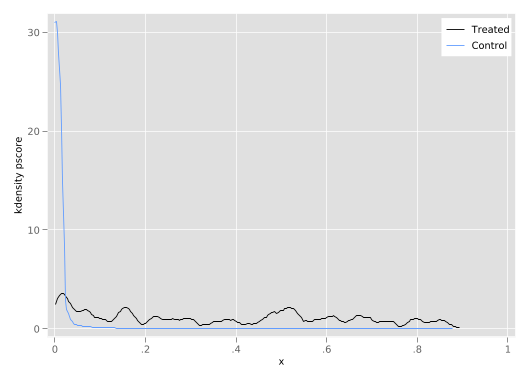
Unsurprisingly, we see that there is substantial mass at 0 among the untreated units. While it is somewhat difficult to observe overlap fully given that there are many more observations in the CPS than in the NSW experiment, we could explore more, for example looking at densities outside the very lowest values to ensure that effectively there are values of the propensity score in the CPS which are similar to those among (treated) NSW units, which suggests a more reasonable overlap, though, of course, there is relatively less mass at the upper end of the propensity score distribution among control units to match to treated units.
// Graph propensity score
twoway kdensity pscore if treat==1&pscore>0.1, bw(0.02) ///
|| kdensity pscore if treat==0&pscore>0.1, bw(0.02) ///
scheme(plottig) legend(order(1 "Treated" 2 "Control") ///
pos(1) ring(0)) xlabel(0.1(0.2)0.9, format(%03.1f))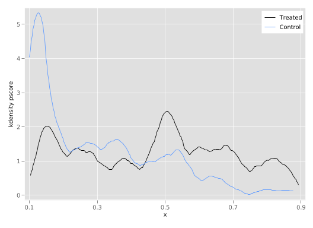
Nearest Neighbour Matching without Replacement
We will now get into the business of matching to generate the ATT based on this propensity score. We will start by considering nearest neighbour matching without replacement. While we could seek to do this with Stata’s native teffects command, we will see here how we can do this “by hand” to fully explore the mechanics of such matching procedures. In particular, we will consider the propensity score of each treated unit, and iterate through each treated unit finding the nearest match. While there are many ways that we could do this, we will do this below by using Stata’s frames which allow us to store just the treated units and their match in a specific data frame. We’ll start this process by setting up a frame and generating empty variables for the outcome of interest as well as each unit’s treatment status and covariates which we can then fill in as we generate our matches. Because in this procedure we will find a single match for each treated unit, we will set the number of observations for this frame as \(N_t\times 2\):
// Set local for all predictor variables
local xvars age age2 age3 education educ2 ///
married nodegree black hispanic re74 ///
re75 u74 u75 edure74
// Generate frame for our matched data
frame create NN
frame NN {
foreach var in re78 pscore treat `xvars' {
gen `var' = .
}
}
// Determine observations for NN matched frame
count if treat==1
local N_tc = r(N)*2
frame NN: set obs `N_tc' 185
Number of observations (_N) was 0, now 370.Now, we will conduct the match procedure itself. Before doing so, we will sort the units based on their propensity score, first with treated units and then with untreated units. This sort order is imporant, as when we iteate through the propensity scores for matching, we will do so from the lowest to the highest. Note that when we sort the propensity score, we are doing so with sort in a way which places treated units first. While we could use gsort to do this more directly, we require the stable option of sort to precisely replicate the results from Dehejia and Wahba (1999), given that a number of propensity scores are exactly the same, and we want to work in the same order which they (presumably) did in their code.
The process of matching itself occurs in the loop where we iterate through the first 185 observations (the treated units). Within that loop, we seek the unit which has the minimum distance between the treated unit’s propensity score and its own propensity score, which we generate in pscore_diff. We then store a rnage of details related to each treated unit and its nearest neighbour in the frame NN. It is worth looking carefully through this code as there are various moving partsy, and running it to ensure it is clear what is occurring in each line.
// Preserve data to begin matching (sort by match order)
preserve
gen treatAlt = treat==0
sort treatAlt pscore, stable
gen unit_sorted = _n
// We will use j to store units in the NN frame
local j = 1
// Iterate over treated units, searching for min distance
forvalues i = 1/185 {
// Store information for treated unit
foreach var of varlist pscore re78 treat `xvars' {
local `var'_t = `var'[`i']
}
// Store information for closest control
qui gen double pscore_diff = abs(pscore-`pscore_t') if treat==0
sort pscore_diff, stable
foreach var of varlist pscore re78 treat `xvars' {
local `var'_c = `var'[1]
}
// Store information in frame
frame NN {
// Store treated information
foreach var of varlist pscore re78 treat `xvars' {
qui replace `var' = ``var'_t' in `j'
}
local ++j
// Store control information
foreach var of varlist pscore re78 treat `xvars' {
qui replace `var' = ``var'_c' in `j'
}
local ++j
}
// Remove matched control, and re-sort
qui drop in 1
drop pscore_diff
sort unit_sorted
}
restoreFinally, with the match in hand we can change to the frame NN, and confirm that the difference in means does indeed correspond to the estimate reported by Dehejia and Wahba (2002):
cwf NN
sum re78 if treat==1
local ytreat = r(mean)
sum re78 if treat==0
local ycontr = r(mean)
dis "Difference in means is: " `ytreat'-`ycontr'
cwf default
Variable | Obs Mean Std. dev. Min Max
-------------+---------------------------------------------------------
re78 | 185 6349.144 7867.402 0 60307.93
Variable | Obs Mean Std. dev. Min Max
-------------+---------------------------------------------------------
re78 | 185 4744.413 6067.755 0 25564.67
Difference in means is: 1604.7307We can follow effectively the same procedures for nearest neighbour matching with an ascending propensity score, or by nearest neighbour matching based on random ordering. Because these codes are so similar (only differing in the lines which order the propensity score), they are left hidden below, however you can click to reveal to confirm that everything makes sense here. First, we can consider nearest neighbour matching with an ascending propensity score:
Show the code (Nearest neighbour ascending)
local xvars age age2 age3 education educ2 ///
married nodegree black hispanic re74 ///
re75 u74 u75 edure74
// Generate frame for our matched data
frame create NN_a
frame NN_a {
foreach var in re78 pscore treat `xvars' {
gen `var' = .
}
}
// Determine observations for NN matched frame
qui count if treat==1
local N_tc = r(N)*2
frame NN_a: qui set obs `N_tc'
// Preserve data to begin matching (sort by match order)
preserve
gen treatAlt = treat==0
gen pscoreAlt = pscore*-1
sort treatAlt pscoreAlt, stable
gen unit_sorted = _n
// Search for min distance to each unit
local j = 1
forvalues i = 1/185 {
// Store information for treated unit
foreach var of varlist pscore re78 treat `xvars' {
local `var'_t = `var'[`i']
}
// Store information for closest control
qui gen double pscore_diff = abs(pscore-`pscore_t') if treat==0
sort pscore_diff, stable
foreach var of varlist pscore re78 treat `xvars' {
local `var'_c = `var'[1]
}
// Store information in frame
frame NN_a {
// Store treated information
foreach var of varlist pscore re78 treat `xvars' {
qui replace `var' = ``var'_t' in `j'
}
local ++j
// Store control information
foreach var of varlist pscore re78 treat `xvars' {
qui replace `var' = ``var'_c' in `j'
}
local ++j
}
// Remove matched control, and re-sort
qui drop in 1
drop pscore_diff
sort unit_sorted
}
restoreand again calculate our matching estimate:
cwf NN_a
sum re78 if treat==1
local ytreat = r(mean)
sum re78 if treat==0
local ycontr = r(mean)
dis "Difference in means is: " `ytreat'-`ycontr'
cwf default
Variable | Obs Mean Std. dev. Min Max
-------------+---------------------------------------------------------
re78 | 185 6349.144 7867.402 0 60307.93
Variable | Obs Mean Std. dev. Min Max
-------------+---------------------------------------------------------
re78 | 185 4789.983 6066.778 0 25564.67
Difference in means is: 1559.1608In this case we see that we can replicate the estimate of 1,559 reported in the table above. We can also consider how things would look with a random ordering (expand code for additional details):
Show the code (Nearest neighbour random)
// Set local for all predictor variables
local xvars age age2 age3 education educ2 ///
married nodegree black hispanic re74 ///
re75 u74 u75 edure74
// Generate frame for our matched data
frame create NN_r
frame NN_r {
foreach var in re78 pscore treat `xvars' {
gen `var' = .
}
}
// Determine observations for NN matched frame
qui count if treat==1
local N_tc = r(N)*2
frame NN_r: qui set obs `N_tc'
// Preserve data to begin matching (sort by match order)
preserve
set seed 1213
gen random = rnormal()
gsort -treat random
gen unit_sorted = _n
// Search for min distance to each unit
local j = 1
forvalues i = 1/185 {
// Store information for treated unit
foreach var of varlist pscore re78 treat `xvars' {
local `var'_t = `var'[`i']
}
// Store information for closest control
qui gen double pscore_diff = abs(pscore-`pscore_t') if treat==0
sort pscore_diff, stable
foreach var of varlist pscore re78 treat `xvars' {
local `var'_c = `var'[1]
}
// Store information in frame
frame NN_r {
// Store treated information
foreach var of varlist pscore re78 treat `xvars' {
qui replace `var' = ``var'_t' in `j'
}
local ++j
// Store control information
foreach var of varlist pscore re78 treat `xvars' {
qui replace `var' = ``var'_c' in `j'
}
local ++j
}
// Remove matched control, and re-sort
qui drop in 1
drop pscore_diff
sort unit_sorted
}
restorefollowing the similar procedure to arrive to our estimate:
cwf NN_r
sum re78 if treat==1
local ytreat = r(mean)
sum re78 if treat==0
local ycontr = r(mean)
dis "Difference in means is: " `ytreat'-`ycontr'
cwf default
Variable | Obs Mean Std. dev. Min Max
-------------+---------------------------------------------------------
re78 | 185 6349.144 7867.402 0 60307.93
Variable | Obs Mean Std. dev. Min Max
-------------+---------------------------------------------------------
re78 | 185 4815.839 6122.62 0 25564.67
Difference in means is: 1533.3046In this latter case, we observe an effect of 1,498, though of course this will depend on the specific (random) ordering, and so unless the seed is set (as it is above), values will vary.
Nearest Neighbour Matching with Replacement
Above we have calculated the values exactly as reported in Dehejia and Wahba (2002) for nearest neighbour matching without replacement, but the table also documents results matching with replacement, and using calipers. Given what we have already done it is, in fact, quite trivial to implement the same procedure with replacement. Previously, we had been removing controls from the donor pool once they had been matched, and so to conduct a procedure with replacement, we can simply remove these lines from the code! In practice, because we are repeating much of the code with just small tweaks, we may like to make these procedures into a simple program which can depend upon arguments that control how propensity scores are sorted, whether replacement is used, and so forth (and indeed, you may prefer to explore this). However, in the interests of simplicity here we will just replicate the procedures we have followed previously, stripping out the line that makes this occur without replacement. Below, we see how we can replicate our matching procedure now permitting replacement of control units.
// Set local for all predictor variables
local xvars age age2 age3 education educ2 ///
married nodegree black hispanic re74 ///
re75 u74 u75 edure74
// Generate frame for our matched data
frame create NN_rep
frame NN_rep {
foreach var in re78 pscore treat `xvars' {
gen `var' = .
}
}
// Determine observations for NN matched frame
qui count if treat==1
local N_tc = r(N)*2
frame NN_rep: qui set obs `N_tc'
// Preserve data to begin matching (sort by match order)
preserve
gen treatAlt = treat==0
sort treatAlt, stable
gen unit_sorted = _n
// Search for min distance to each unit
local j = 1
forvalues i = 1/185 {
// Store information for treated unit
foreach var of varlist pscore re78 treat `xvars' {
local `var'_t = `var'[`i']
}
// Store information for closest control
qui gen pscore_diff = abs(pscore-`pscore_t') if treat==0
sort pscore_diff, stable
list in 1/2
foreach var of varlist pscore re78 treat `xvars' {
local `var'_c = `var'[1]
}
// Store information in frame
frame NN_rep {
// Store treated information
foreach var of varlist pscore re78 treat `xvars' {
qui replace `var' = ``var'_t' in `j'
}
local ++j
// Store control information
foreach var of varlist pscore re78 treat `xvars' {
qui replace `var' = ``var'_c' in `j'
}
local ++j
}
// Re-sort (do not drop matched control!)
drop pscore_diff
sort unit_sorted
}
restoreAs above, we can now change to our matched dataframe and generate a simple comparison of means:
cwf NN_rep
sum re78 if treat==1
local ytreat = r(mean)
sum re78 if treat==0
local ycontr = r(mean)
dis "Difference in means is: " `ytreat'-`ycontr'
cwf default
Variable | Obs Mean Std. dev. Min Max
-------------+---------------------------------------------------------
re78 | 185 6349.144 7867.402 0 60307.93
Variable | Obs Mean Std. dev. Min Max
-------------+---------------------------------------------------------
re78 | 185 4989.556 6436.382 0 25564.67
Difference in means is: 1359.5878Once again, if we compare the difference of means estimate with that reported by Dehejia and Wahba (2002), we can see that we have replicated the result precisely.
Caliper Matching
Finally, we need to implement a caliper matching procedure. In Dehejia and Wahba (2002), this procedure consists of matching all observations within some “caliper” surrounding each treated unit’s propensity score. Within that caliper, each treated unit is matched to the mean outcome among all controls. Note that in a standard caliper match one would generally remove units for which no observation is found within the given caliper, however in Dehejia and Wahba (2002) footnote 10 it is noted that in cases such as this, each treated unit is matched with its nearest neighbour (outside of the caliper). This is done within the matching below using the else: condition. You may note that below (after sorting order observations so that we can work with all treated units), we are interating through each caliper size indicated in the Table (0.00001, 0.00005, and 0.0001). Within each calpier size, our inner loop (forvalues i=1/185), then finds the match or average of all matches for each treated unit.
// Preserve data to begin matching (sort by dataset order)
gen treatAlt = treat==0
sort treatAlt, stable
gen unit_sorted = _n
//Iterate through calipers
foreach cal in 1 5 10 {
local caliper = `cal'/100000
dis "Working with caliper `caliper'"
frame create caliper_`cal'
frame caliper_`cal' {
foreach var in re78 pscore treat `xvars' {
gen `var' = .
}
}
//set 370 observatiosn (185 treated plus 185 controls)
frame caliper_`cal': qui set obs 370
// Search for min distance to each unit
local j = 1
forvalues i = 1/185 {
// Store information for treated unit
foreach var of varlist pscore re78 treat `xvars' {
local `var'_t = `var'[`i']
}
// Store information for closest control(s)
preserve
qui gen pscore_diff = abs(pscore-`pscore_t') if treat==0
sort pscore_diff, stable
// check if observations within caliper, or else keep nearest
qui count if pscore_diff<=`caliper'
if r(N)>0 qui keep if pscore_diff<=`caliper'
else qui keep in 1
collapse pscore re78 `xvars' treat
foreach var of varlist pscore re78 treat `xvars' {
local `var'_c = `var'[1]
}
// Store information in frame
frame caliper_`cal' {
// Store treated information
foreach var of varlist pscore re78 treat `xvars' {
qui replace `var' = ``var'_t' in `j'
}
local ++j
// Store control information
foreach var of varlist pscore re78 treat `xvars' {
qui replace `var' = ``var'_c' in `j'
}
local ++j
}
restore
// Remove matched control, and re-sort
sort unit_sorted, stable
}
}Working with caliper .00001
Working with caliper .00005
Working with caliper .0001Finally, we can loop through each of the resulting frames generated, and calculate the difference of means quantity. If we compare the values below to those in the Table above, we will see that they are all identical.
foreach cal in 1 5 10 {
dis "Caliper" `cal'/100000
cwf caliper_`cal'
qui sum re78 if treat==1
local ytreat = r(mean)
qui sum re78 if treat==0
local ycontr = r(mean)
dis "Difference in means is: " `ytreat'-`ycontr'
cwf default
}Caliper.00001
Difference in means is: 1118.795
Caliper.00005
Difference in means is: 1157.7492
Caliper.0001
Difference in means is: 1121.7551Bringing things together
Let’s now bring this all together and provide a final summary table like Dehejia and Wahba (2002). To do this, we will first need to generate the simple unmatched difference in means and experimental estimate which are reported in the first two rows of the Table. This is done quite easily by just taking the difference of means (or a regression) with the full set of CPS data (observational) and the full set of experimental data (experimental), and we do this below, taking care to save the full set of covariate means and this estimated effect in separate frames for processing below.
//Generate means and effect for experimental sample
frame create NSW
frame NSW: set obs 1
foreach var in re78 pscore `xvars' {
frame NSW: qui gen `var' = .
qui sum `var' if treat==1 & experimental==1
frame NSW: qui replace `var' = r(mean)
}
reg re78 treat if experimental==1
frame NSW: gen effect = _b[treat]
//Generate means and effect for observational sample
frame create CPS
frame CPS: set obs 1
foreach var in re78 pscore `xvars' {
frame CPS: qui gen `var' = .
qui sum `var' if observational==1&treat==0
frame CPS: qui replace `var' = r(mean)
}
reg re78 treat if observational==1
frame CPS: gen effect = _b[treat]Number of observations (_N) was 0, now 1.
Source | SS df MS Number of obs = 445
-------------+---------------------------------- F(1, 443) = 8.04
Model | 348013183 1 348013183 Prob > F = 0.0048
Residual | 1.9178e+10 443 43290369.3 R-squared = 0.0178
-------------+---------------------------------- Adj R-squared = 0.0156
Total | 1.9526e+10 444 43976681.9 Root MSE = 6579.5
------------------------------------------------------------------------------
re78 | Coefficient Std. err. t P>|t| [95% conf. interval]
-------------+----------------------------------------------------------------
treat | 1794.342 632.8534 2.84 0.005 550.5745 3038.11
_cons | 4554.801 408.0459 11.16 0.000 3752.855 5356.747
------------------------------------------------------------------------------
Number of observations (_N) was 0, now 1.
Source | SS df MS Number of obs = 16,177
-------------+---------------------------------- F(1, 16175) = 142.43
Model | 1.3206e+10 1 1.3206e+10 Prob > F = 0.0000
Residual | 1.4997e+12 16,175 92717516 R-squared = 0.0087
-------------+---------------------------------- Adj R-squared = 0.0087
Total | 1.5129e+12 16,176 93528158.7 Root MSE = 9629
------------------------------------------------------------------------------
re78 | Coefficient Std. err. t P>|t| [95% conf. interval]
-------------+----------------------------------------------------------------
treat | -8497.516 712.0207 -11.93 0.000 -9893.156 -7101.877
_cons | 14846.66 76.14292 194.98 0.000 14697.41 14995.91
------------------------------------------------------------------------------Now, based on all this we can summarise the effects and mean characteristics of controls to generate a comparable table to Table 2 above. We do this below:
local titles NSW CPS Rand LtH HtL NN C1 C5 C10
tokenize `titles'
foreach line in NSW CPS {
cwf `line'
foreach var of varlist * {
format `var' %04.2f
}
format re74 %7.0gc
format re75 %7.0gc
format effect %6.0gc
//display row title (no line break)
dis "`1'" _continue
//display row contents
list pscore age education black hispanic nodegree married re74 re75 u74 u75 effect, noheader compress clean noobs table linesize(90)
macro shift
}
dis "Without replacement"
foreach line in NN NN_a NN_r NN_rep caliper_1 caliper_5 caliper_10 {
if "`line'"=="NN_r" dis "With replacement"
cwf `line'
qui regress re78 treat
gen effect = _b[treat]
qui keep if treat==0
collapse pscore age education black hispanic nodegree married re74 re75 u74 u75 effect
foreach var of varlist * {
format `var' %04.2f
}
format re74 %6.0gc
format re75 %6.0gc
format effect %6.0gc
//Display row title
dis "`1'" _continue
//Display row contents
list pscore age education black hispanic nodegree married re74 re75 u74 u75 effect, noheader compress clean noobs table linesize(90)
macro shift
}NSW 0.37 25.82 10.35 0.84 0.06 0.71 0.19 2,096 1,532 0.29 0.40 1794
CPS 0.01 33.23 12.03 0.07 0.07 0.30 0.71 14017 13651 0.88 0.89 -8498
Without replacement
Rand 0.32 25.23 10.28 0.84 0.06 0.66 0.22 2286 1687 0.37 0.51 1605
LtH 0.32 25.26 10.30 0.84 0.06 0.65 0.22 2305 1687 0.37 0.51 1559
HtL 0.32 25.23 10.28 0.84 0.06 0.66 0.22 2286 1687 0.37 0.51 1533
With replacement
NN 0.37 25.36 10.31 0.84 0.06 0.69 0.17 2407 1516 0.35 0.49 1360
C1 0.37 25.26 10.31 0.84 0.07 0.69 0.17 2424 1509 0.36 0.50 1119
C5 0.37 25.29 10.28 0.84 0.07 0.69 0.17 2305 1523 0.35 0.49 1158
C10 0.37 25.19 10.36 0.84 0.07 0.69 0.17 2213 1545 0.34 0.50 1122 If we compare this to the Table above, we can see that this is identical. While we could seek to further optimise the presentation of the table, we do not here, as we simply want to ensure that our exercises above fully recreate those in Dehejia and Wahba (2002).
Code Call-out 3.2 - Considering Overlap and Variable Balance
Maternal smoking during pregnancy has been a subject of extensive study due to its potential impact on infant health outcomes, such as birth weight. However, simply comparing the birth weights of infants born to smokers versus non-smokers may not account for confounding factors that influence both the likelihood of smoking and birth outcomes. In this code call-out, we will work with data from Almond, Chay, and Lee (2005) which consists of a child’s birthweight, an indicator of whether their mother smoked during pregnancy, and a number of covariates.
In their paper, Almond, Chay, and Lee (2005) conduct a propensity score matching procedure in which mothers who smoked and mothers who did not were matched based on a rich array of covariates, and differences in birthweight were examined between mothers who smoked and matched non-smokers. We will examine these data and procedures here. In particular, in this code call-out we will examine a number of issues which arise when implementing propensity score matching in practice: a first consideration is related to overlap and trimming, and a second consideration is related to tests of balance of variable when matching on the propensity score. Thus, while the code call-out above focused on the technology of matching conditional on a given sample to match, here we will work through some of the practicalities related to thinking about which samples to match, and ways to evaluate matches.
We will now load the data used in Almond, Chay, and Lee (2005). In their paper, they consider a range of key variables, including: “mother’s and father’s age, education, and race, marital status, number of previous live births and terminations, prenatal care usage, months since last birth, immigrant status, county of birth, indicators for previous births over 4000 grams or LBW, indicators for alcohol use, and indicators for medical risk factors.” We will work with the majority of these, with the exception of a small number of measures which are not avaialable in public data, and the county of birth given the many counties, and the fact that we do not have a logical measure apart from a series of dummies for each county for this measure. We define the local covariates below which contains the full set of variables.
clear all
set more off
// Load the dataset
use "data/Almond_et_al_2005.dta", clear
// generate required strings
gen mmarried_num = mmarried =="Married"
gen mbsmoke_num = mbsmoke =="Smoker"
gen fbaby_num = fbaby =="Yes"
// Store covariate names
local covariates mmarried_num mage fage mrace frace medu fbaby_num monthslb ///
fhisp foreign order prenatal deadkids lbweightLet’s now go about estimating the propensity score. We will seek to estimate the likelihood that a mother smokes before birth (mbsmoke) based on the covariates indicated above.
logit mbsmoke_num `covariates'
predict pscore, pr
Iteration 0: Log likelihood = -2230.7484
Iteration 1: Log likelihood = -2010.1259
Iteration 2: Log likelihood = -1994.1024
Iteration 3: Log likelihood = -1994.0182
Iteration 4: Log likelihood = -1994.0182
Logistic regression Number of obs = 4,642
LR chi2(14) = 473.46
Prob > chi2 = 0.0000
Log likelihood = -1994.0182 Pseudo R2 = 0.1061
------------------------------------------------------------------------------
mbsmoke_num | Coefficient Std. err. z P>|z| [95% conf. interval]
-------------+----------------------------------------------------------------
mmarried_num | -1.096615 .1051827 -10.43 0.000 -1.302769 -.8904609
mage | -.0144055 .0103874 -1.39 0.165 -.0347644 .0059534
fage | -.0077016 .0048931 -1.57 0.115 -.0172918 .0018887
mrace | .5799877 .1964138 2.95 0.003 .1950237 .9649518
frace | .1257013 .1903084 0.66 0.509 -.2472964 .498699
medu | -.1440446 .0186432 -7.73 0.000 -.1805846 -.1075045
fbaby_num | -.346062 .1307711 -2.65 0.008 -.6023686 -.0897553
monthslb | .0051994 .0014854 3.50 0.000 .002288 .0081107
fhisp | -.7768299 .2384136 -3.26 0.001 -1.244112 -.3095479
foreign | -.9094056 .2536923 -3.58 0.000 -1.406633 -.4121779
order | .0042134 .050059 0.08 0.933 -.0939005 .1023272
prenatal | .1892395 .0723077 2.62 0.009 .0475191 .33096
deadkids | .4001627 .090327 4.43 0.000 .223125 .5772005
lbweight | .7498943 .1435332 5.22 0.000 .4685743 1.031214
_cons | .6331098 .3212477 1.97 0.049 .0034759 1.262744
------------------------------------------------------------------------------This will result in a propensity score which is strictly between 0 and 1 given the logit model estimated. If we wish, we can plot the cumulative density function to ensure to ourselves that we are satisfied that this is the case, as we see below:
sort pscore
gen cdf = _n/_N
twoway scatter cdf pscore, ///
xtitle("Propensity Score") xlabel(, format("%03.1f")) ///
ytitle("Cumulative density") ylabel(, format("%03.1f"))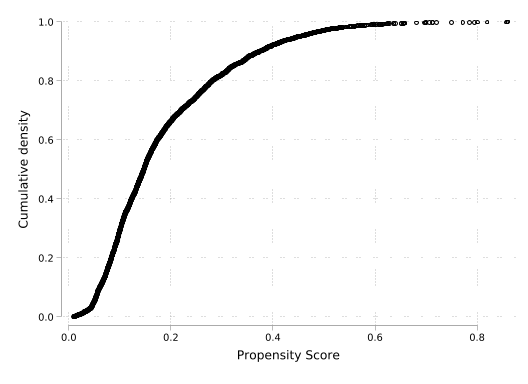
As a final preliminary step, we will follow an identical procedure to that which we followed above in call-out 3.1 to conduct nearest neighbour matching. Because we have discussed these matching procedures at some length above, we will not go into this in much depth here. As we have seen previously, our procedure below finds a match for each treated unit (without replacement), and our matched units and controls will be stored in their own frame called matched_data.
// Generate frame for our matched data
frame create matched_data
frame matched_data {
foreach var in mbsmoke_num bweight pscore `covariates' {
gen `var' = .
}
}
// Determine observations for NN matched frame
count if mbsmoke_num==1
local N_tc = r(N)*2
frame matched_data: set obs `N_tc'
// Preserve data to begin matching (sort by match order)
preserve
gen treatAlt = mbsmoke_num==0
sort treatAlt pscore, stable
gen unit_sorted = _n
// We will use j to store units in the NN frame
local j = 1
// Iterate over treated units, searching for min distance
forvalues i = 1/864 {
// Store information for treated unit
foreach var of varlist pscore bweight mbsmoke_num `covariates' {
local `var'_t = `var'[`i']
}
// Store information for closest control
qui gen double pscore_diff = abs(pscore-`pscore_t') if mbsmoke_num==0
sort pscore_diff, stable
foreach var of varlist pscore bweight mbsmoke_num `covariates' {
local `var'_c = `var'[1]
}
// Store information in frame
frame matched_data {
// Store treated information
foreach var of varlist pscore bweight mbsmoke_num `covariates' {
qui replace `var' = ``var'_t' in `j'
}
local ++j
// Store control information
foreach var of varlist pscore bweight mbsmoke_num `covariates' {
qui replace `var' = ``var'_c' in `j'
}
local ++j
}
// Remove matched control, and re-sort
qui drop in 1
drop pscore_diff
sort unit_sorted
}
restore 864
Number of observations (_N) was 0, now 1,728.If we wish to be sure that this has worked, we can change to our new data frame (using cwf) and confirm that we effectively generate a matched unit for each treated unit. We do this below seeing that initially these data consist of 864 smokers and 3,778 non-smokers, while after matching the data consist of 864 of each group. We then change back to our original data frame.
// Check sample sizes (should be 864 and 864)
cwf matched_data
count if mbsmoke_num == 1
count if mbsmoke_num == 0
cwf default 864
864We will now turn to consider practicalities in conducting our matches, and considering the balance of resulting matches. Many of these practical issues are discussed in Caliendo and Kopeinig (2008), who provide a particular useful applied set of recommendations for both trimming propensity scores to ensure that common support assumptions are met, and assessing balance of resulting matches, which are discussed in turn below.
Trimming to Ensure Common Support
A first consideration is whether the propensity score estimates suggest that overlap is unlikely to be met. Prior to any estimation we will wish to inspect overlap, given that violation of common support will introduce bias in estimation even if conditional unconfoundedness assumptions are met. If we inspect the propensity score just visually in this case, we can actually see that we may be relatively satisfied that we do not have major issues with overlap. In the histograms displayed below we see that for virtually the entirety of the support of propensity scores for the smoking group there are individuals with similar propensity scores in the non-smoking group:
// Visualization of Propensity Score overlap
twoway ///
(histogram pscore if mbsmoke_num == 0, percent color(blue%40) lcolor(black) bin(50)) ///
(histogram pscore if mbsmoke_num == 1, percent color(red%40) lcolor(black) bin(50)), ///
legend(order(1 "Mother did not smoke" 2 "Mother smoked") title("Mother's Smoking")) ///
xtitle("Propensity score") xlabel(, format("%03.1f")) ///
ytitle("Frequency")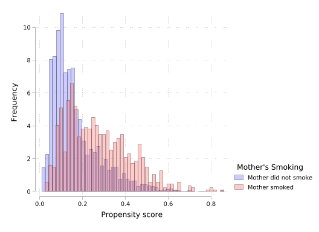
Indeed, we can ensure that our visual inspection above is correct. Let’s check below whether there are any treated units with a propensity score that is more extreme than potential donors:
* Separate treated and control groups based on the defined labels
display "Overlap Check for Propensity Scores:"
quietly summarize pscore if mbsmoke_num == 1
display "Smoking status Yes (Treated): min pscore = " r(min) " max pscore = " r(max)
quietly summarize pscore if mbsmoke_num == 0
display "Smoking status No (Control): min pscore = " r(min) " max pscore = " r(max)Overlap Check for Propensity Scores:
Smoking status Yes (Treated): min pscore = .02474307 max pscore = .85941482
Smoking status No (Control): min pscore = .00971731 max pscore = .86040491We see here that the entire range of propensity scores among treated units is contained in the propensity score of controls, and so we are probably quite safe to not worry too much about issues with overlap. Nevertheless, in the interests of considering what to do in cases where we may be more concerned about overlap, we consider two procedures discussed in Caliendo and Kopeinig (2008), Smith and Todd (2005), Heckman, Lalonde, and Smith (1999).
Minima and Maxima Comparison
The minima and maxima comparison involves deleting observations whose propensity scores are smaller than the minimum or larger than the maximum in the opposite group. This ensures that we only keep observations within the common support region. Below we generate a variable which marks the sample based on the common support among groups. This simply indicates observations for which a common support exists based on the treatment indicator, and propensity score measure:
* Get min and max of the propensity score by group
quietly summarize pscore if mbsmoke_num == 1
local min_treat = r(min)
local max_treat = r(max)
quietly summarize pscore if mbsmoke_num == 0
local min_control = r(min)
local max_control = r(max)
display "Min treated = `min_treat'"
display "Max treated = `max_treat'"
display "Min control = `min_control'"
display "Max control = `max_control'"
* Define Common Support
local cs_min = max(`min_treat', `min_control')
local cs_max = min(`max_treat', `max_control')
display "Common Support Min = `cs_min'"
display "Common Support Max = `cs_max'"
* Generate an indicator for observations within the common support
gen in_support = pscore>=`cs_min' & pscore<=`cs_max'
display "Total kept (within support):"
count if in_support
display "Treated kept:"
count if mbsmoke_num == 1 & in_support
display "Control kept:"
count if mbsmoke_num == 0 & in_supportMin treated = .0247430689632893
Max treated = .85941481590271
Min control = .0097173107787967
Max control = .860404908657074
Common Support Min = .0247430689632893
Common Support Max = .85941481590271
Total kept (within support):
4,589
Treated kept:
863
Control kept:
3,726We visualize the propensity score overlap after implementing the trimming procedure, where we see that only a few observations are trimmed at the upper and lower end when compared to ?@fig-allmatchedStata.
* Visualization: Histogram of overlap after trimming
twoway ///
(histogram pscore if mbsmoke_num==0&in_support==1, ///
percent color(blue%40) lcolor(black) bin(50)) ///
(histogram pscore if mbsmoke_num==1&in_support==1, ///
percent color(red%40) lcolor(black) bin(50)), ///
legend(order(1 "Mother did not smoke" 2 "Mother smoked") title("Mother's smoking status")) ///
xtitle("Propensity score") xlabel(, format("%03.1f")) ///
ytitle("Frequency")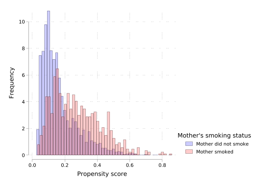
Trimming based on the support region
Another procedure, discussed formally in Smith and Todd (2005), is to only consider units with a non-zero density of the propensity score, at the same time discarding propensity scores where there is a very low density of observations in either group. In particular, this requires estimating densities of the propensity score for both treated and control units \(\hat{f}(P \mid D = 1)\) and \(\hat{f}(P \mid D = 0)\). Smith and Todd (2005) suggest estimating these densities use a kernel density estimator, and they suggest doing this with a bandwidth parameter for constructing the kernel as laid out by Silverman (1986), which is to define the bandwidth as \(h = \sigma \times N^{1/5}\), where \(\sigma\) refers to the standard deviation of data. Fortunately, by default, Stata employs Silverman’s rule of thumb to select bandwidths in kernel densities. We estimate these densities as belwo, employing a Gaussian kernel.
* Kernel density plot
twoway ///
(kdensity pscore if mbsmoke_num==1, kernel(gaussian) lcolor(blue) lwidth(medthick)) ///
(kdensity pscore if mbsmoke_num==0, kernel(gaussian) lcolor(red) lwidth(medthick)), ///
legend(order(1 "X == 1 (treated)" 2 "X == 0 (control)")) ///
xtitle("Propensity score") xlabel(, format("%03.1f")) ///
ytitle("Density") ///
graphregion(color(white))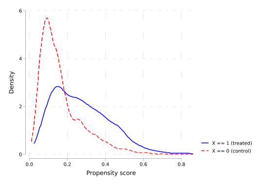
We can see in the plot based on these densities that very low densities are observed around about 0.8 among the treated units, or around about 0.6 in the untreated units. The proposal of Smith and Todd (2005) is to keep the union of units for which the density of the propensity score is 0 in both groups. They additionally suggest that units with propensity scores with very low densities in either group should be discarded. Specifically, if a very low density of a propensity score exists for the treated, observations with this score should be removed in both treated and control samples. They suggest setting a density cut-off trimming level \(c_q\) that keeps observations with a propensity score \(P\) such that:
\[ P:\ \hat{f}(P \mid D = 1) > c_q \ \text{and}\ \hat{f}(P \mid D = 0) > c_q \]
where \(c_q\) is set such that some fixed low proportion of data is removed.
This definition requires calculating the density a propensity score would be observed with based on the distributions for \(D=1\) and \(D=0\). Below we estimate each of these density functions, and then apply them to the entire dataset which allows us to see the density of a given \(P\) in both groups:
kdensity pscore if mbsmoke_num==0, at(pscore) gen(pscorefit0 density0) kernel(gaussian)
kdensity pscore if mbsmoke_num==1, at(pscore) gen(pscorefit1 density1) kernel(gaussian)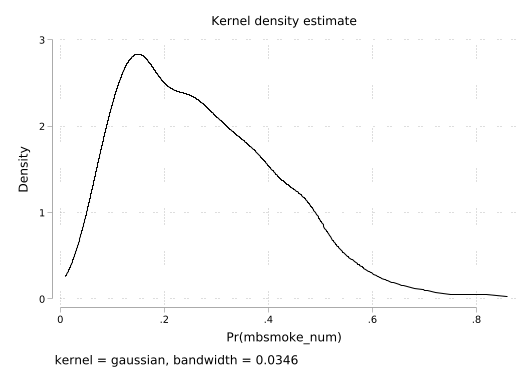
Now, based on the quantities density1 and density0, we can set some value \(c_q\) as a criteria for keeping observations. For example, below we can see that if we use some very low density value like 0.05, we will keep the vast majority of observations (>99%):
local cq = 0.05
count if density1>`cq' & density0>`cq'
local nkeep = r(N)
count
local ntotal = r(N)
local pkeep = (`nkeep'/`ntotal') * 100
display "Setting density at " `cq' " results in " %9.6f `pkeep' "% of data being kept" 4,614
4,642
Setting density at .05 results in 99.396812% of data being keptwhile if we use a higher density value, we will trim more observations from our value:
local cq = 0.25
count if (density1 > `cq' & density0 > `cq')
local nkeep = r(N)
local pkeep = (`nkeep'/`ntotal') * 100
display "Setting density at " `cq' " results in " %9.6f `pkeep' "% of data kept" 4,437
Setting density at .25 results in 95.583800% of data keptThe proposal of Smith and Todd (2005) is that we should set the value of \(c_q\) to trim some small proportion of observations, and they suggest this should be 2% of the data. Below we can do this by trying small values of \(c_q\), gradually increasing until we iterate onto the value which results in a trim proportion of 2%:
// Finding optimal density cutoff to keep 98% of data (trim 2%)...
local pkeep = 100
local cq = 0
local delta = 0.0001
local iter = 0
quietly {
while `pkeep' > 98 {
local cq = `cq' + `delta'
count if (density1 > `cq' & density0 > `cq')
local nkeep = r(N)
local pkeep = (`nkeep'/`ntotal') * 100
local iter = `iter' + 1
* Show progress every 500 iterations
if mod(`iter', 500) == 0 {
noisily display "Iteration `iter': cq = " %8.6f `cq' ", pkeep = " %6.3f `pkeep' "%"
}
}
}
display "The trim value is " %10.8f `cq'
display "Resulting in a final dataset of `nkeep' observations"
display "This represents " %6.3f `pkeep' "% of data"Iteration 500: cq = 0.050000, pkeep = 99.397%
Iteration 1000: cq = 0.100000, pkeep = 98.492%
Iteration 1500: cq = 0.150000, pkeep = 98.190%
The trim value is 0.16280000
Resulting in a final dataset of 4549 observations
This represents 97.997% of data// Filter the dataset with the values that meet the final threshold
gen smith_todd_keep = (density1 > `cq' & density0 > `cq')
// Save dataset trimmed_data
display "Observations kept by group after Smith-Todd trimming:"
tab mbsmoke_num if smith_todd_keep==1Observations kept by group after Smith-Todd trimming:
mbsmoke_num | Freq. Percent Cum.
------------+-----------------------------------
0 | 3,732 82.04 82.04
1 | 817 17.96 100.00
------------+-----------------------------------
Total | 4,549 100.00Finally, we can see the resulting propensity score distributions based on this procedure, which makes clear that we have trimmed observations with high propensity scores which had very low densities.
twoway ///
(histogram pscore if mbsmoke_num==0 & smith_todd_keep==1, ///
percent color(blue%40) lcolor(black) bin(30)) ///
(histogram pscore if mbsmoke_num==1 & smith_todd_keep==1, ///
percent color(red%40) lcolor(black) bin(30)), ///
legend(order(1 "Mother did not smoke" 2 "Mother smoked")) ///
xtitle("Propensity score") xlabel(, format("%03.1f")) ///
ytitle("Density") ///
graphregion(color(white))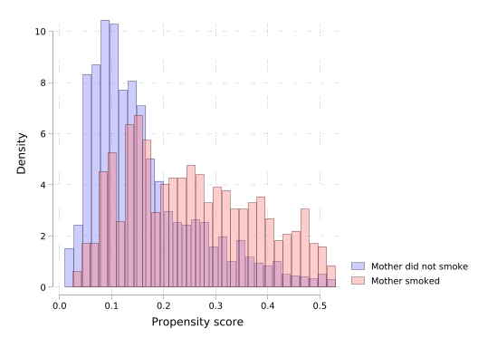
Covariate Balance
A second consideration in implementing matching is whether balance is indeed achieved once matching has been conducted. Caliendo and Kopeinig (2008) suggest a number of ways such procedures can be implemented, and we examine two of these below.
t-Tests of Balance
A first consideration is to simply conduct t-tests of balance across the treated and the matched sample. Below, we use ttest to implement t-tests for equality of means across groups.
* IMPORTANT: Define the list of covariates first
global covariates "mmarried_num mage fage mrace frace medu fbaby_num monthslb fhisp foreign order prenatal deadkids lbweight"
* Create matrix to store results
matrix balance_before = J(14, 3, .)
* Row names
matrix rownames balance_before = ///
"Married" "Mother_Age" "Father_Age" "Mother_Race" ///
"Father_Race" "Mother_Edu" "First_Baby" "Months_Last_Birth" ///
"Father_Hisp" "Mother_Foreign" "Birth_Order" "Prenatal" ///
"Previous_Death" "Low_Birth_Weight"
* Column names
matrix colnames balance_before = "t_statistic" "p_value" "Reject_Null"
* Loop to fill the matrix
local row = 1
foreach var of global covariates {
quietly ttest `var', by(mbsmoke_num) unequal
matrix balance_before[`row', 1] = r(t)
matrix balance_before[`row', 2] = r(p)
matrix balance_before[`row', 3] = (r(p) < 0.05)
local ++row
}We can examine balance with our original data, resulting in a test of balance suggesting substantial misbalance, suggesting that individuals who smoke and who do not smoke during pregnancy are different in all observable characteristics considered:
display "Balance before matching (t-test)"
matrix list balance_before, format(%9.6f)Balance before matching (t-test)
balance_before[14,3]
t_statistic p_value Reject_Null
Married 15.118300 0.000000 1.000000
Mother_Age 8.121774 0.000000 1.000000
Father_Age 7.650927 0.000000 1.000000
Mother_Race 2.655645 0.008019 1.000000
Father_Race 4.481255 0.000008 1.000000
Mother_Edu 15.279127 0.000000 1.000000
First_Baby 4.451716 0.000009 1.000000
Months_Las~h -4.659539 0.000004 1.000000
Father_Hisp 0.623640 0.532970 0.000000
Mother_For~n 5.200576 0.000000 1.000000
Birth_Order -4.012094 0.000064 1.000000
Prenatal -5.723717 0.000000 1.000000
Previous_D~h -4.175801 0.000032 1.000000
Low_Birth_~t -5.438906 0.000000 1.000000However, if we now consider the matched sample based on the nearest neighbour procedure implemented above, we see a quite different result. Once matching on propensity score, we observe balance on all observables, suggesting that at least for these measures, the balancing property of the propensity score is clear.
// Evaluate after matching
cwf matched_data
// Create matrix to store results
matrix balance_after = J(14, 3, .)
matrix rownames balance_after = ///
"Married" "Mother_Age" "Father_Age" "Mother_Race" ///
"Father_Race" "Mother_Edu" "First_Baby" "Months_Last_Birth" ///
"Father_Hisp" "Mother_Foreign" "Birth_Order" "Prenatal" ///
"Previous_Death" "Low_Birth_Weight"
matrix colnames balance_after = "t_statistic" "p_value" "Reject_Null"
// Loop to fill the matrix
local row = 1
foreach var of global covariates {
quietly ttest `var', by(mbsmoke_num) unequal
matrix balance_after[`row', 1] = r(t)
matrix balance_after[`row', 2] = r(p)
matrix balance_after[`row', 3] = (r(p) < 0.05)
local ++row
}
// Show matrix
display "Balance after matching (t-test)"
matrix list balance_after, format(%9.6f)
cwf defaultBalance after matching (t-test)
balance_after[14,3]
t_statistic p_value Reject_Null
Married 0.240699 0.809817 0.000000
Mother_Age -0.983229 0.325635 0.000000
Father_Age 0.597385 0.550329 0.000000
Mother_Race 0.122617 0.902425 0.000000
Father_Race 0.337421 0.735840 0.000000
Mother_Edu -0.495915 0.620020 0.000000
First_Baby 0.940161 0.347267 0.000000
Months_Las~h -0.534887 0.592797 0.000000
Father_Hisp 0.262655 0.792848 0.000000
Mother_For~n -0.473937 0.635605 0.000000
Birth_Order -0.536704 0.591541 0.000000
Prenatal 0.627177 0.530626 0.000000
Previous_D~h -0.103329 0.917714 0.000000
Low_Birth_~t 0.153006 0.878412 0.000000Standardised mean differences
An alternative consideration is to inspect standardised mean differences. This consists of examining the standardised bias (SB), both before matching, calculated as follows: \[ SB_{before}= 100 \cdot\frac{\bar{X}_1 - \bar{X}_0}{\sqrt{0.5 \cdot \left( V_1(X) + V_0(X) \right)}} \] and calculated after matching: \[ SB_{after}= 100 \cdot\frac{\bar{X}_{1M} - \bar{X}_{0M}}{\sqrt{0.5 \cdot \left( V_{1M}(X) + V_{0M}(X) \right)}} \] Here \(\bar{X}\) refers to means, \(V(X)\) refers to the variance, subsets refer to treated or control (1 vs 0) or matched versus unmatched samples (M or nothing).
We define a simple program below which calculates these standardised differences, returning a scalar containing the standardised bias for each covariate considered.
capture program drop calc_smd
program define calc_smd, rclass
syntax varname, treat(varname)
quietly summarize `varlist' if `treat' == 1
local mean1 = r(mean)
local var1 = r(Var)
quietly summarize `varlist' if `treat' == 0
local mean0 = r(mean)
local var0 = r(Var)
local pooled_std = sqrt((`var1' + `var0') / 2)
local smd = (`mean1' - `mean0') / `pooled_std'
return scalar smd = `smd'
endWe can now apply this both based on original and matched data. Ultimately, we will generate a matrix containing each covariate’s name, as well as the unadjusted and adjusted SB.
* Calculate standardized mean differences before and after matching
matrix smd_results = J(14, 2, .)
matrix rownames smd_results = "Married" "Mother_Age" "Father_Age" "Mother_Race" ///
"Father_Race" "Mother_Edu" "First_Baby" "Months_Last_Birth" "Father_Hisp" ///
"Mother_Foreign" "Birth_Order" "Prenatal" "Previous_Death" "Low_Birth_Weight"
matrix colnames smd_results = "Unadjusted" "Adjusted"
local row = 1
foreach var of global covariates {
// Unadjusted (full sample)
quietly calc_smd `var', treat(mbsmoke_num)
matrix smd_results[`row', 1] = r(smd)
// Adjusted (matched sample only)
cwf matched_data
quietly calc_smd `var', treat(mbsmoke_num)
matrix smd_results[`row', 2] = r(smd)
cwf default
local ++row
}
matrix list smd_results, format(%9.6f)
smd_results[14,2]
Unadjusted Adjusted
Married -0.595301 -0.011581
Mother_Age -0.300179 0.047306
Father_Age -0.308888 -0.028742
Mother_Race -0.102945 -0.005899
Father_Race -0.175592 -0.016234
Mother_Edu -0.547436 0.023860
First_Baby -0.166327 -0.045234
Months_Las~h 0.184197 0.025735
Father_Hisp -0.023091 -0.012637
Mother_For~n -0.170616 0.022802
Birth_Order 0.154527 0.025822
Prenatal 0.233992 -0.030175
Previous_D~h 0.161322 0.004971
Low_Birth_~t 0.226841 -0.007361Finally, we can plot this, observing the sharp difference in standardised bias between adjusted and unadjusted groups. In this case, we observe that all values of \(SB\) for the matched group are less than 0.1. While no formal definition exists for what is a “good” match, Caliendo and Kopeinig (2008) suggest that “in most empirical studies an SB below 3% or 5% after matching is seen as sufficient”. In general we observe this to hold, though in the case of prenatal care (-5.22%), this is at the limit and may suggest further refinements to the matching process.
// Plot
preserve
clear
svmat smd_results, names(col)
gen covariate = ""
gen id = _n
local row = 1
foreach var of global covariates {
quietly replace covariate = "`var'" in `row'
local ++row
}
label define cov_labels ///
1 "Married" 2 "Mother's Age" 3 "Father's Age" 4 "Mother's Race" ///
5 "Father's Race" 6 "Mother's Education" 7 "First Baby" ///
8 "Months Since Last Birth" 9 "Father Hispanic" 10 "Mother Foreign Born" ///
11 "Birth Order" 12 "Prenatal Care" 13 "Previous Child Death" ///
14 "Low Birth Weight"
label values id cov_labels
twoway ///
(scatter id Unadjusted, mcolor(blue) msize(large) msymbol(O)) ///
(scatter id Adjusted, mcolor(red) msize(large) msymbol(O)), ///
xline(0, lcolor(gray) lpattern(dash)) ///
ylabel(1(1)14, valuelabel angle(0) labsize(vsmall)) ///
ytitle("") xtitle("Standardized Mean Differences") ///
legend(order(1 "Unadjusted" 2 "Adjusted") cols(1) pos(11) ring(0)) ///
xlabel(, format("%03.1f")) scheme(white_tableau)
restore(Note: Below code run with echo to enable preserve/restore functionality.)
number of observations will be reset to 14
Press any key to continue, or Break to abort
Number of observations (_N) was 0, now 14.
(14 missing values generated)
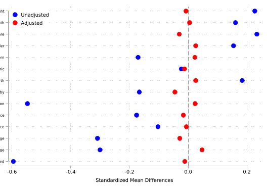
Comparing Covariate Balance Before and After Trimming
Finally, noting that the previous process worked with the matched data in the untrimmed sample, we can also consider how things look using the trimming procedure suggested by Smith and Todd (2005). In general, because we observe quite good overlap in this setting, we may expect that no major differences will be observed, but for the sake of completeness we examine this below. We can do this based on our previously defined functions, and using the trimmed data:
// Generate match based on trimmed data
keep if smith_todd_keep==1
display "Performing matching on trimmed data..."
frame create matched_data_trimmed
frame matched_data_trimmed {
foreach var in mbsmoke_num bweight pscore `covariates' {
gen `var' = .
}
}
// Determine observations for NN matched frame
count if mbsmoke_num==1
local N_t = r(N)
local N_tc = r(N)*2
frame matched_data_trimmed: set obs `N_tc'
// Preserve data to begin matching (sort by match order)
preserve
gen treatAlt = mbsmoke_num==0
sort treatAlt pscore, stable
gen unit_sorted = _n
// We will use j to store units in the NN frame
local j = 1
// Iterate over treated units, searching for min distance
forvalues i = 1/`N_t' {
// Store information for treated unit
foreach var of varlist pscore bweight mbsmoke_num `covariates' {
local `var'_t = `var'[`i']
}
// Store information for closest control
qui gen double pscore_diff = abs(pscore-`pscore_t') if mbsmoke_num==0
sort pscore_diff, stable
foreach var of varlist pscore bweight mbsmoke_num `covariates' {
local `var'_c = `var'[1]
}
// Store information in frame
frame matched_data_trimmed {
// Store treated information
foreach var of varlist pscore bweight mbsmoke_num `covariates' {
qui replace `var' = ``var'_t' in `j'
}
local ++j
// Store control information
foreach var of varlist pscore bweight mbsmoke_num `covariates' {
qui replace `var' = ``var'_c' in `j'
}
local ++j
}
// Remove matched control, and re-sort
qui drop in 1
drop pscore_diff
sort unit_sorted
}
restore
// Calculate standardized mean differences before and after trimming and matching
matrix smd_trimmed = J(14, 2, .)
matrix rownames smd_trimmed = "Married" "Mother_Age" "Father_Age" "Mother_Race" ///
"Father_Race" "Mother_Edu" "First_Baby" "Months_Last_Birth" "Father_Hisp" ///
"Mother_Foreign" "Birth_Order" "Prenatal" "Previous_Death" "Low_Birth_Weight"
matrix colnames smd_trimmed = "Unadjusted" "Adjusted"
local row = 1
foreach var of global covariates {
// Unadjusted (trimmed but not matched)
quietly calc_smd `var', treat(mbsmoke_num)
matrix smd_trimmed[`row', 1] = r(smd)
// Adjusted (trimmed AND matched)
cwf matched_data_trimmed
quietly calc_smd `var', treat(mbsmoke_num)
matrix smd_trimmed[`row', 2] = r(smd)
cwf default
local ++row
}
matrix list smd_trimmed, format(%9.6f)(Note: Below code run with echo to enable preserve/restore functionality.)
(93 observations deleted)
Performing matching on trimmed data...
817
Number of observations (_N) was 0, now 1,634.
smd_trimmed[14,2]
Unadjusted Adjusted
Married -0.557414 -0.004893
Mother_Age -0.314116 0.030431
Father_Age -0.293223 -0.027587
Mother_Race -0.101107 -0.015738
Father_Race -0.169052 -0.023123
Mother_Edu -0.562787 -0.026100
First_Baby -0.132484 -0.025008
Months_Las~h 0.151812 0.014598
Father_Hisp -0.009343 0.013448
Mother_For~n -0.164942 0.023465
Birth_Order 0.130297 0.012215
Prenatal 0.211742 -0.045001
Previous_D~h 0.148590 0.010618
Low_Birth_~t 0.183553 -0.024978
Comparing the standardised bias here and above, we observe very little difference, and indeed, the SB on prenatal care usage becomes slightly worse. In this case, we may wish to consider a richer specification for the propensity score, potentially including interactions and higher order terms for covariates, and reconsidering the match quality.
// Plot with matched and trimmed data
preserve
clear
svmat smd_trimmed, names(col)
gen covariate = ""
gen id = _n
local row = 1
foreach var of global covariates {
quietly replace covariate = "`var'" in `row'
local ++row
}
label define cov_labels ///
1 "Married" 2 "Mother's Age" 3 "Father's Age" 4 "Mother's Race" ///
5 "Father's Race" 6 "Mother's Education" 7 "First Baby" ///
8 "Months Since Last Birth" 9 "Father Hispanic" 10 "Mother Foreign Born" ///
11 "Birth Order" 12 "Prenatal Care" 13 "Previous Child Death" ///
14 "Low Birth Weight"
label values id cov_labels
twoway ///
(scatter id Unadjusted, mcolor(blue) msize(large) msymbol(O)) ///
(scatter id Adjusted, mcolor(red) msize(large) msymbol(O)), ///
xline(0, lcolor(gray) lpattern(dash)) ///
ylabel(1(1)14, valuelabel angle(0) labsize(vsmall)) ///
ytitle("") xtitle("Standardized Mean Differences") ///
legend(order(1 "Unadjusted" 2 "Adjusted") cols(1) pos(11) ring(0)) ///
xlabel(, format("%03.1f")) scheme(white_tableau)
restore(Note: Below code run with echo to enable preserve/restore functionality.)
number of observations will be reset to 14
Press any key to continue, or Break to abort
Number of observations (_N) was 0, now 14.
(14 missing values generated)
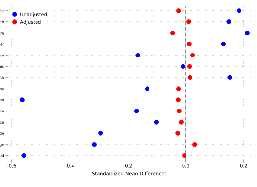
Code Call-out 3.3 - Inverse Propensity Score Weighting, Regression and Matching
In this code call-out, we will consider different procedures one may employ when maintaining a conditional unconfoundedness assumption. To illustrate alternative procedures – namely regression, inverse propensity score weighting and matching, we will work with an example laid out in Millimet and Tchernis (2009) and re-examined in Sant’Anna and Song (2019). In this case, the authors consider the impact of membership in a trade agreement such as GAT and WTO on a country’s measures of environmental sustainability. We will work with the data originally from Millimet and Tchernis (2009), in particular focusing on one of multiple outcomes, which is CO\(_2\) emissions per capita. Below we will explore the implementation of matching strategies, regression strategies, and re-weighting strategies, setting up each of these procedures in turn, documenting both the estimation of an ATE, as well as an ATT in each case.
Prior to getting into the mechanics of each, let’s load our data and generate a number of key variables. We do this below:
* Load the dataset
import delimited "data/Millimet_Tchernis_2009.csv", clear
* Rescale GDP to be in 1000s of dollars
replace rgdpch = rgdpch / 1000
* Create the necessary variables
gen rgdpchXareap = rgdpch * areap
gen rgdpchXpolity = rgdpch * polity
gen areapXpolity = areap * polity
* Define covariates and treatment variable
local covariates rgdpch polity areap rgdpchXareap rgdpchXpolity areapXpolity
local treatment gattwto
local outcome co2perc(encoding automatically selected: ISO-8859-1)
(6 vars, 232 obs)
variable rgdpch was long now double
(232 real changes made)Above we have loaded the data of Millimet and Tchernis (2009) which consists of an outcome variable (co2perc, for CO\(_2\) per capita), as well as a series of variables which Millimet and Tchernis (2009) consider as required for a conditional unconfoundedness assumption to be reasonable. As discussed in Sant’Anna and Song (2019), here we will not delve deeply into whether such assumptions are relevant in this particular case, though further discussion of these assumptions can be found in Section 3.5 of the book. In particular, we consider the following variables for conditioning: real GDP per capita (rgdpch), land area divided by population (areap) and an indicator of institutional quality (polity). We also incorporate interactions among each of these pairs of variables. Our treatment of interest is membership in the GATT or WTO (gattwto). Finally note that in order to be able to interpret regression parameters below as ATT or ATEs, we re-centre all of these covariates on zero.
Matching-based estimation
Because we have already considered matching-based procedures above, let’s begin by re-implementing such procedures here. To do this, we will first need to estimate a propensity score, which we do below using a Logit specification, and the covariates mentioned above. In practice we should consider sensitivity to such choices as discussed in code call-out 3.2 above, but here in the interests of simplicity, we will simply follow Millimet and Tchernis (2009) and Sant’Anna and Song (2019) to trim our estimated propensity score at 0.05 and 0.95.
logit `treatment' `covariates'
predict pscore, pr
keep if pscore >= 0.05 & pscore <= 0.95
Iteration 0: Log likelihood = -120.9127
Iteration 1: Log likelihood = -107.49
Iteration 2: Log likelihood = -103.99861
Iteration 3: Log likelihood = -103.61384
Iteration 4: Log likelihood = -103.61198
Iteration 5: Log likelihood = -103.61197
Logistic regression Number of obs = 232
LR chi2(6) = 34.60
Prob > chi2 = 0.0000
Log likelihood = -103.61197 Pseudo R2 = 0.1431
------------------------------------------------------------------------------
gattwto | Coefficient Std. err. z P>|z| [95% conf. interval]
-------------+----------------------------------------------------------------
rgdpch | .057873 .0543967 1.06 0.287 -.0487427 .1644886
polity | -.051975 .0459711 -1.13 0.258 -.1420768 .0381268
areap | .0068272 .0041503 1.64 0.100 -.0013073 .0149616
rgdpchXareap | -.0007845 .0005697 -1.38 0.168 -.001901 .000332
rgdpchXpol~y | .0234235 .0090038 2.60 0.009 .0057764 .0410706
areapXpolity | .0003681 .000497 0.74 0.459 -.0006059 .0013422
_cons | .4225866 .2894696 1.46 0.144 -.1447634 .9899366
------------------------------------------------------------------------------
(52 observations deleted)Let’s now move on to implementing a propensity score matching estimator. We have seen this extensively in code call-out 3.1, so below we will simply consider one specific example, which is to do nearest neighbour matching with matches completed in random order. We will use the teffects programs, in particular teffects psmatch:
teffects psmatch (`outcome') (`treatment' `covariates')
Treatment-effects estimation Number of obs = 180
Estimator : propensity-score matching Matches: requested = 1
Outcome model : matching min = 1
Treatment model: logit max = 1
------------------------------------------------------------------------------
| AI robust
co2perc | Coefficient std. err. z P>|z| [95% conf. interval]
-------------+----------------------------------------------------------------
ATE |
gattwto |
(1 vs 0) | -.7307722 .5358673 -1.36 0.173 -1.781053 .3195085
------------------------------------------------------------------------------teffects psmatch (`outcome') (`treatment' `covariates'), atet
Treatment-effects estimation Number of obs = 180
Estimator : propensity-score matching Matches: requested = 1
Outcome model : matching min = 1
Treatment model: logit max = 1
------------------------------------------------------------------------------
| AI robust
co2perc | Coefficient std. err. z P>|z| [95% conf. interval]
-------------+----------------------------------------------------------------
ATET |
gattwto |
(1 vs 0) | -.4286799 .5683605 -0.75 0.451 -1.542646 .6852863
------------------------------------------------------------------------------You may note that this procedure is actually slightly distinct to what we estimate in other languages, because Stata’s teffects library re-estimates the propensity score based on our trimmed sample, while what we would perhaps rather do is match based on our trimmed sample with the same propensity score. However, we could of course do this precisely the same as we do in other language if instead we follow precisely the steps defined in call-out 3.1 where we defined our own matching function by hand.
Regression-based estimation
Let’s begin by considering our standard OLS regression model, as laid out in equation 3.31 of the text. Because we wish to allow separate effects of covariates on outcomes among treated and untreated individuals, we will first create a full set of interactions between each covariate and the treatment indicator, and define a set of locals containing covariates (covariates), the interaction with the treatment indicator (interaction_terms), and the treatment indicator itself for estimation:
* Create covariate × treatment interaction terms (
* Re-scale all variables so that they have mean zero
foreach var of local covariates {
sum `var'
replace `var' = `var' - r(mean)
}
local covariates rgdpch polity areap rgdpchXareap rgdpchXpolity areapXpolity
local treatment gattwto
* Create the list of interaction terms
local interaction_terms
foreach var of local covariates {
gen `var'_T = `var' * `treatment'
local interaction_terms `interaction_terms' `var'_T
}
list _all in 1/6
Variable | Obs Mean Std. dev. Min Max
-------------+---------------------------------------------------------
rgdpch | 180 3.8945 3.392114 .524 27.02
(180 real changes made)
Variable | Obs Mean Std. dev. Min Max
-------------+---------------------------------------------------------
polity | 180 1.227778 6.601871 -9 10
variable polity was byte now float
(180 real changes made)
Variable | Obs Mean Std. dev. Min Max
-------------+---------------------------------------------------------
areap | 180 44.48207 68.79248 .204218 506.1797
(180 real changes made)
Variable | Obs Mean Std. dev. Min Max
-------------+---------------------------------------------------------
rgdpchXareap | 180 138.2898 218.7404 1.650095 1872.918
(180 real changes made)
Variable | Obs Mean Std. dev. Min Max
-------------+---------------------------------------------------------
rgdpchXpol~y | 180 12.06468 30.5086 -54.04 98.57
(180 real changes made)
Variable | Obs Mean Std. dev. Min Max
-------------+---------------------------------------------------------
areapXpolity | 180 -13.85168 543.9845 -3543.258 1484.788
(180 real changes made)
+------------------------------------------------------------------------+
1. | year | gattwto | co2perc | rgdpch | areap | polity | rgdpchX~p |
| 1990 | 0 | .5038033 | -2.0045 | 77.36733 | -8.22778 | 92.00555 |
|------------------------------------------------------------------------|
| rgdpchX~y | areapXp~y | pscore | rgdpch_T | polity_T | areap_T |
| -25.29468 | -839.0941 | .7156733 | 0 | 0 | 0 |
|-----------------------+------------------------------------------------|
| rgdpc~p_T | rgdpc~y_T | areapXp~T |
| 0 | 0 | 0 |
+------------------------------------------------------------------------+
+------------------------------------------------------------------------+
2. | year | gattwto | co2perc | rgdpch | areap | polity | rgdpchX~p |
| 1990 | 1 | 3.385655 | 3.2635 | 39.65388 | 5.77222 | 463.9553 |
|------------------------------------------------------------------------|
| rgdpchX~y | areapXp~y | pscore | rgdpch_T | polity_T | areap_T |
| 38.04132 | 602.8033 | .8771179 | 3.2635 | 5.772222 | 39.65388 |
|-----------------------+------------------------------------------------|
| rgdpc~p_T | rgdpc~y_T | areapXp~T |
| 463.9553 | 38.04132 | 602.8033 |
+------------------------------------------------------------------------+
+------------------------------------------------------------------------+
3. | year | gattwto | co2perc | rgdpch | areap | polity | rgdpchX~p |
| 1990 | 1 | .033388 | -2.9335 | -39.78082 | -8.22778 | -133.7719 |
|------------------------------------------------------------------------|
| rgdpchX~y | areapXp~y | pscore | rgdpch_T | polity_T | areap_T |
| -18.79168 | -19.05704 | .668386 | -2.9335 | -8.227777 | -39.78082 |
|-----------------------+------------------------------------------------|
| rgdpc~p_T | rgdpc~y_T | areapXp~T |
| -133.7719 | -18.79168 | -19.05704 |
+------------------------------------------------------------------------+
+------------------------------------------------------------------------+
4. | year | gattwto | co2perc | rgdpch | areap | polity | rgdpchX~p |
| 1990 | 1 | .1117569 | -2.9355 | -13.64874 | -8.22778 | -108.7207 |
|------------------------------------------------------------------------|
| rgdpchX~y | areapXp~y | pscore | rgdpch_T | polity_T | areap_T |
| -18.77768 | -201.9816 | .6883717 | -2.9355 | -8.227777 | -13.64874 |
|-----------------------+------------------------------------------------|
| rgdpc~p_T | rgdpc~y_T | areapXp~T |
| -108.7207 | -18.77768 | -201.9816 |
+------------------------------------------------------------------------+
+------------------------------------------------------------------------+
5. | year | gattwto | co2perc | rgdpch | areap | polity | rgdpchX~p |
| 1990 | 1 | .1432499 | -2.5345 | -43.26876 | -6.22778 | -136.6397 |
|------------------------------------------------------------------------|
| rgdpchX~y | areapXp~y | pscore | rgdpch_T | polity_T | areap_T |
| -18.86468 | 7.785153 | .647175 | -2.5345 | -6.227778 | -43.26876 |
|-----------------------+------------------------------------------------|
| rgdpc~p_T | rgdpc~y_T | areapXp~T |
| -136.6397 | -18.86468 | 7.785153 |
+------------------------------------------------------------------------+
+------------------------------------------------------------------------+
6. | year | gattwto | co2perc | rgdpch | areap | polity | rgdpchX~p |
| 1990 | 1 | .8233227 | -1.3435 | 120.4943 | 7.77222 | 282.565 |
|------------------------------------------------------------------------|
| rgdpchX~y | areapXp~y | pscore | rgdpch_T | polity_T | areap_T |
| 10.89432 | 1498.639 | .8789988 | -1.3435 | 7.772222 | 120.4943 |
|-----------------------+------------------------------------------------|
| rgdpc~p_T | rgdpc~y_T | areapXp~T |
| 282.565 | 10.89432 | 1498.639 |
+------------------------------------------------------------------------+You will note that we have built our local iteration_terms up iteratively, so that in each iteration of the loop above we incorporate an additional interaction term. With the series of locals in hand, we can now estimate a simple regression where out outcome (CO\(_2\) emissions per capita) is regressed on our treatment of interest (trade organisation membership) as well as the full set of interactive controls:
* Regression-based estimation
reg `outcome' `covariates' `interaction_terms' `treatment'
* Extract the treatment coefficient (equivalent to the ATT coefficient in Python)
display "Treatment coefficient (`treatment'): " _b[`treatment']
Source | SS df MS Number of obs = 180
-------------+---------------------------------- F(13, 166) = 34.68
Model | 1394.47649 13 107.267422 Prob > F = 0.0000
Residual | 513.41349 166 3.09285235 R-squared = 0.7309
-------------+---------------------------------- Adj R-squared = 0.7098
Total | 1907.88998 179 10.6586032 Root MSE = 1.7587
------------------------------------------------------------------------------
co2perc | Coefficient Std. err. t P>|t| [95% conf. interval]
-------------+----------------------------------------------------------------
rgdpch | .6382331 .1911968 3.34 0.001 .2607421 1.015724
polity | -.1738373 .0979677 -1.77 0.078 -.3672607 .019586
areap | -.0440046 .014364 -3.06 0.003 -.0723643 -.0156449
rgdpchXareap | .0139325 .0031854 4.37 0.000 .0076433 .0202216
rgdpchXpol~y | .0370772 .0229127 1.62 0.108 -.0081606 .082315
areapXpolity | -.0015781 .0011863 -1.33 0.185 -.0039202 .0007641
rgdpch_T | .1484034 .1969953 0.75 0.452 -.2405358 .5373427
polity_T | .1822744 .1079435 1.69 0.093 -.0308446 .3953935
areap_T | .0491753 .0147853 3.33 0.001 .0199838 .0783667
rgdpchXare~T | -.0169079 .0033494 -5.05 0.000 -.0235207 -.010295
rgdpchXpol~T | -.0358877 .0244008 -1.47 0.143 -.0840635 .0122882
areapXpoli~T | .0012761 .0012447 1.03 0.307 -.0011815 .0037336
gattwto | -.5795675 .329464 -1.76 0.080 -1.230047 .0709122
_cons | 2.542985 .2904838 8.75 0.000 1.969466 3.116504
------------------------------------------------------------------------------
Treatment coefficient (gattwto): -.57956749Here, because all controls are mean 0, we can understand the estimated effect on gattwto as referring to the mean effect in our sample. Now, let’s consider the implementation described in Equation 3.32 of the text. We can see that this is indeed equivalent to the regression implementation above. First, let’s generate \(\hat{\mu}_i(0)\) . This is done by estimating the regression only among individuals who are un-treated, and then predicting outcomes among all individuals based on the paramters estimated in the un-treated group. We do this below.
* Regression for untreated individuals only
reg `outcome' `covariates' if `treatment' == 0
* Predict Y0hat for the entire sample using covariates only
predict Y0hat, xb
Source | SS df MS Number of obs = 50
-------------+---------------------------------- F(6, 43) = 15.83
Model | 335.559164 6 55.9265274 Prob > F = 0.0000
Residual | 151.938852 43 3.53346167 R-squared = 0.6883
-------------+---------------------------------- Adj R-squared = 0.6448
Total | 487.498016 49 9.94893911 Root MSE = 1.8798
------------------------------------------------------------------------------
co2perc | Coefficient Std. err. t P>|t| [95% conf. interval]
-------------+----------------------------------------------------------------
rgdpch | .6382331 .2043626 3.12 0.003 .2260968 1.05037
polity | -.1738373 .1047137 -1.66 0.104 -.3850127 .0373381
areap | -.0440046 .0153531 -2.87 0.006 -.0749671 -.0130421
rgdpchXareap | .0139325 .0034048 4.09 0.000 .0070661 .0207988
rgdpchXpol~y | .0370772 .0244904 1.51 0.137 -.0123124 .0864668
areapXpolity | -.0015781 .001268 -1.24 0.220 -.0041352 .0009791
_cons | 2.542985 .3104864 8.19 0.000 1.916829 3.16914
------------------------------------------------------------------------------You can note in the regression summary that this just provides identical output from the un-interacted regression parameters we estimated previously given that in our prior model we could separately model the effect of the controls on outcomes both in the untreated and the treated goup. Now, let’s do the same thing to generate \(\hat{\mu}_i(1)\):
* Regression for treated individuals only
reg `outcome' `covariates' if `treatment' == 1
* Predict Y1hat for the entire sample
predict Y1hat, xb
Source | SS df MS Number of obs = 130
-------------+---------------------------------- F(6, 123) = 59.55
Model | 1049.97812 6 174.996354 Prob > F = 0.0000
Residual | 361.474638 123 2.9388182 R-squared = 0.7439
-------------+---------------------------------- Adj R-squared = 0.7314
Total | 1411.45276 129 10.9414943 Root MSE = 1.7143
------------------------------------------------------------------------------
co2perc | Coefficient Std. err. t P>|t| [95% conf. interval]
-------------+----------------------------------------------------------------
rgdpch | .7866366 .0462473 17.01 0.000 .6950928 .8781803
polity | .0084371 .0441794 0.19 0.849 -.0790133 .0958876
areap | .0051706 .003416 1.51 0.133 -.0015911 .0119324
rgdpchXareap | -.0029754 .001009 -2.95 0.004 -.0049726 -.0009782
rgdpchXpol~y | .0011895 .0081794 0.15 0.885 -.0150011 .0173801
areapXpolity | -.000302 .0003673 -0.82 0.413 -.0010291 .0004251
_cons | 1.963417 .1515325 12.96 0.000 1.663468 2.263366
------------------------------------------------------------------------------Here regression parameters pick up the relationship between the outcome and covariates for treated units only, whereas in the fully interacted models the interaction terms pick up differential effects between groups. As such, the parameters above are directly interpretable as the sum of both parameters in the previous model. Now, finally, let’s see that we can indeed replicate the regression estimand from these imputed quantities. One way to do so is simply take the difference between counterfactuals for each unit:
gen tau_i = Y1hat - Y0hat
sum tau_i
display "ATT (mean tau_i) = " r(mean)
Variable | Obs Mean Std. dev. Min Max
-------------+---------------------------------------------------------
tau_i | 180 -.5795675 2.661085 -20.50375 7.255218
ATT (mean tau_i) = -.57956753An alternative way, as shown in the second line of 3.32 is to compare relevant counterfactuals for each group with their true outcome:
gen tau_ii = `treatment' * (`outcome' - Y0hat) + (1 - `treatment') * (Y1hat - `outcome')
sum tau_ii
display "Mean tau_i = " r(mean)
Variable | Obs Mean Std. dev. Min Max
-------------+---------------------------------------------------------
tau_ii | 180 -.5795675 3.154299 -18.45992 7.318276
Mean tau_i = -.57956751In both cases, we see that regression parameters are identical to those estimated previously.
A nice thing about this latter procedure is that it immediately suggests to us a way to calculate an ATT rather than an ATE. We simply do the same as above, however now only consider the counterfactual comparison for treated units only. This is:
summ tau_i if `treatment' == 1
display "ATT from Regression = " r(mean)
Variable | Obs Mean Std. dev. Min Max
-------------+---------------------------------------------------------
tau_i | 130 -.4263969 2.893989 -20.50375 7.255218
ATT from Regression = -.42639687Of course once we have regression counterfactuals generated in this way, we could estimate treatment effects for any unit, facilitating the generation of regression-based CATEs. In this particular case we see that the regression based estimates agree reasonably well with the propensity score matching methods explored above. This need not always be the case given that regression-based estimators will impute outcomes for all units, regardless of how close they are to other treated or control units, and extrapolation in regression may result in estimates that diverge from those produced in matching.
Inverse Propensity Score Weighting
Finally, we can examine propensity score weighting methods. We have of course already estimated our propensity score previously, so all we need to do is convert this into weights whereby treated units are weighted as \(\frac{1}{\left(\widehat{P}(X)\right)}\), and untreated units are weighted as \(\frac{1}{\left(1 - \widehat{P}(X)\right)}\). We will generate these weights below, and have a look at what this means graphically:
gen weights = .
replace weights = 1/pscore if `treatment' == 1
replace weights = 1/(1-pscore) if `treatment' == 0
* Scale weights for visualization (optional)
gen wsize = weights/5
* Scatter plot
twoway ///
(scatter co2perc pscore if `treatment'==1 [w=wsize], ///
mcolor(red%50) msymbol(O) msize(medlarge)) ///
(scatter co2perc pscore if `treatment'==0 [w=wsize], ///
mcolor(blue%50) msymbol(O) msize(medlarge)), ///
legend(order(1 "Treated" 2 "Control") pos(2) ring(0))(180 missing values generated)
(130 real changes made)
(50 real changes made)
(analytic weights assumed)
(analytic weights assumed)
(analytic weights assumed)
(analytic weights assumed)
(analytic weights assumed)
(analytic weights assumed)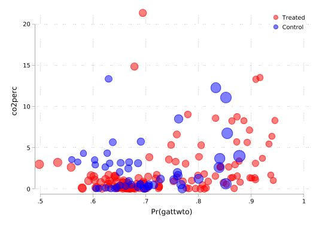
The scatter plot above plots our outcome of interest against estimated propensity scores, scaling each unit by the weight it receives. As we expect, we can see that untreated units with high propensity scores are given high weights because we wish to scale up these observations given their greater similarity to treated units. Similarly, treated units with low propensity scores are given relatively higher weights.
We could certainly further optimise the above graph by providing more illustrative axis titles and ensuring that our legend is clearly labelled as indicative of treated units (blue) and control units (red), and you may wish to do that yourself if you want to practice with graphing in Stata. But for our purposes, we can clearly see how inverse propensity score weighting weights up units to seek to maximise the similarity between treated and control samples.
Now we can simply estimate our propensity-score re-weighted estimators. it is useful to see that there is a number of ways to simply arrive at this quantity. The first, and perhaps most cumbersome is to calculate this quantity by hand. Nevertheless, this is quite simple as just take the formulae laid out in Chapter 3 to code. In the case of the ATE, remember that the quantity we wish to calculate is:
\[\widehat\tau^{IPW}_{ATE}=\left(\frac{\frac{1}{N}\sum_{i=1}^N\frac{Y_iW_i}{\widehat{P}(X_i)}}{\frac{1}{N}\sum_{i=1}^N\frac{W_i}{\widehat{P}(X_i)}}\right)-\left(\frac{\frac{(1-W_i)Y_i}{1-\widehat{P}(X_i)}}{\frac{1}{N}\sum_{i=1}^N\frac{1-W_i}{1-\widehat{P}(X_i)}}\right).\]
Below, we will calculate the numerator and denominator of each term, before using these to calculate the ATE:
local outcome co2perc
local treatment gattwto
* Y_w
gen Y_w = .
replace Y_w = `outcome'/pscore if `treatment'==1
replace Y_w = `outcome'/(1-pscore) if `treatment'==0
* W_w
gen W_w = .
replace W_w = 1/pscore if `treatment'==1
replace W_w = 1/(1-pscore) if `treatment'==0
* Sumas necesarias
sum Y_w if `treatment'==1
scalar NT = r(sum)
sum Y_w if `treatment'==0
scalar NC = r(sum)
sum W_w if `treatment'==1
scalar DT = r(sum)
sum W_w if `treatment'==0
scalar DC = r(sum)
* ATE
scalar ATE = (NT/DT) - (NC/DC)
display "The ATE is: " ATE(180 missing values generated)
(130 real changes made)
(50 real changes made)
(180 missing values generated)
(130 real changes made)
(50 real changes made)
Variable | Obs Mean Std. dev. Min Max
-------------+---------------------------------------------------------
Y_w | 130 2.688024 4.251951 .0182255 30.69572
Variable | Obs Mean Std. dev. Min Max
-------------+---------------------------------------------------------
Y_w | 50 10.79991 16.65003 .0925667 74.85919
Variable | Obs Mean Std. dev. Min Max
-------------+---------------------------------------------------------
W_w | 130 1.385945 .19714 1.058449 2.006702
Variable | Obs Mean Std. dev. Min Max
-------------+---------------------------------------------------------
W_w | 50 3.652176 1.399903 2.271744 8.164342
The ATE is: -1.0176269We could of course have used the quantity weight which we calculated above in place of W_w, however we regenerate this so we can see the similarity with the previous line all in one place. Doing this, we calculate an IPW ATE of -1.01, similar, though slightly higher than the regression and nearest neighbour matched quantity. What is perhaps interesting to see is that this quantity can be calculated directly using a weighted regression, where the weights we calculated are used. We do this below:
local outcome co2perc
local treatment gattwto
reg `outcome' `treatment' [aw = weights](sum of wgt is 362.7816405296326)
Source | SS df MS Number of obs = 180
-------------+---------------------------------- F(1, 178) = 4.22
Model | 46.5983029 1 46.5983029 Prob > F = 0.0413
Residual | 1963.61415 178 11.0315402 R-squared = 0.0232
-------------+---------------------------------- Adj R-squared = 0.0177
Total | 2010.21245 179 11.2302372 Root MSE = 3.3214
------------------------------------------------------------------------------
co2perc | Coefficient Std. err. t P>|t| [95% conf. interval]
-------------+----------------------------------------------------------------
gattwto | -1.017627 .4951327 -2.06 0.041 -1.994712 -.0405415
_cons | 2.957116 .3489343 8.47 0.000 2.268535 3.645696
------------------------------------------------------------------------------As expected, we calculate an identical quantity for the IPW ATE of -1.01. Note finally that we can also do this by simply taking weighted averages of the outcome in each group, and subtracting the weighted control group avarege from the weighted treated group average. We will do this below using a weighted summation:
local outcome co2perc
local treatment gattwto
sum `outcome' [aw = weights] if `treatment' == 1
scalar Y1_mean = r(mean)
sum `outcome' [aw = weights] if `treatment' == 0
scalar Y0_mean = r(mean)
* ATE
scalar ATE = Y1_mean - Y0_mean
display "Control group average is " Y0_mean
display "Treatment group average is " Y1_mean
display "ATE is " ATE
Variable | Obs Weight Mean Std. dev. Min Max
-------------+-----------------------------------------------------------------
co2perc | 130 180.172827 1.939489 3.212693 .0147798 21.31904
Variable | Obs Weight Mean Std. dev. Min Max
-------------+-----------------------------------------------------------------
co2perc | 50 182.608814 2.957116 3.435564 .0365012 13.3324
Control group average is 2.9571156
Treatment group average is 1.9394887
ATE is -1.0176269It is useful to see that these are all numerically equivalent ways to calculate an IPW estimate, and that we can simply select that which we prefer to arrive to point estimates.
Finally, note that we can also generate the ATT in this way, simply replacing the weights above with the weights which correspond to an IPW ATT estimator (refer to equation 3.30 of the book):
local outcome co2perc
local treatment gattwto
gen weightsATT = .
replace weightsATT = 1 if `treatment' == 1
replace weightsATT = pscore / (1 - pscore) if `treatment' == 0
gen Y_w_ATT = .
replace Y_w_ATT = `outcome' if `treatment' == 1
replace Y_w_ATT = `outcome' * pscore / (1 - pscore) if `treatment' == 0
sum Y_w_ATT if `treatment' == 1
scalar NT = r(sum)
sum Y_w_ATT if `treatment' == 0
scalar NC = r(sum)
sum weightsATT if `treatment' == 1
scalar DT = r(sum)
sum weightsATT if `treatment' == 0
scalar DC = r(sum)
scalar ATT = (NT/DT) - (NC/DC)
display "The ATT is: " %9.5f ATT(180 missing values generated)
(130 real changes made)
(50 real changes made)
(180 missing values generated)
(130 real changes made)
(50 real changes made)
Variable | Obs Mean Std. dev. Min Max
-------------+---------------------------------------------------------
Y_w_ATT | 130 2.096825 3.307793 .0147798 21.31904
Variable | Obs Mean Std. dev. Min Max
-------------+---------------------------------------------------------
Y_w_ATT | 50 8.205541 13.89112 .0560655 63.77833
Variable | Obs Mean Std. dev. Min Max
-------------+---------------------------------------------------------
weightsATT | 130 1 0 1 1
Variable | Obs Mean Std. dev. Min Max
-------------+---------------------------------------------------------
weightsATT | 50 2.652176 1.399903 1.271744 7.164342
The ATT is: -0.99706Once again, this can also be replicated directly via weighted regression (which provides us valid point estimates, though not standard errors), as we see below:
local outcome co2perc
local treatment gattwto
reg `outcome' `treatment' [aw = weightsATT]
display "ATT (WLS ATT-IPW) = " _b[`treatment'](sum of wgt is 262.6088143587112)
Source | SS df MS Number of obs = 180
-------------+---------------------------------- F(1, 178) = 3.84
Model | 44.7317602 1 44.7317602 Prob > F = 0.0517
Residual | 2074.89157 178 11.6566942 R-squared = 0.0211
-------------+---------------------------------- Adj R-squared = 0.0156
Total | 2119.62333 179 11.8414711 Root MSE = 3.4142
------------------------------------------------------------------------------
co2perc | Coefficient Std. err. t P>|t| [95% conf. interval]
-------------+----------------------------------------------------------------
gattwto | -.9970643 .5089825 -1.96 0.052 -2.001481 .0073521
_cons | 3.09389 .3581128 8.64 0.000 2.387197 3.800583
------------------------------------------------------------------------------
ATT (WLS ATT-IPW) = -.9970643In this case we observe that the ATT and the ATE are very similar, though both slightly higher than the corresponding estimates generated by matching and regression. Depending on the specific context and whether particularly large misbalances are observed between units in treatment and control groups, we will not necessarily observe such similarity. In this case we do, given that propensity scores are relatively well balanced and there is broad coverage of higher propensity scores among untreated units, as well as lower propensity scores among untreated units.
References
Almond, Douglas, Kenneth Y. Chay, and David S. Lee. 2005. “The Costs of Low Birth Weight.” The Quarterly Journal of Economics 120 (3): 1031–83. https://EconPapers.repec.org/RePEc:oup:qjecon:v:120:y:2005:i:3:p:1031-1083.
Caliendo, Marco, and Sabine Kopeinig. 2008. “SOME PRACTICAL GUIDANCE FOR THE IMPLEMENTATION OF PROPENSITY SCORE MATCHING.” Journal of Economic Surveys 22 (1): 31–72. https://doi.org/https://doi.org/10.1111/j.1467-6419.2007.00527.x.
Dehejia, Rajeev H., and Sadek Wahba. 1999. “Causal Effects in Nonexperimental Studies: Reevaluating the Evaluation of Training Programs.” Journal of the American Statistical Association 94 (448): 1053–62. http://www.jstor.org/stable/2669919.
———. 2002. “Propensity Score-Matching Methods For Nonexperimental Causal Studies.” The Review of Economics and Statistics 84 (1): 151–61.
Heckman, James J., Robert J. Lalonde, and Jeffrey A. Smith. 1999. “Chapter 31 – the Economics and Econometrics of Active Labor Market Programs.” In, edited by Orley C. Ashenfelter and David Card, 3:1865–2097. Handbook of Labor Economics. Elsevier. https://doi.org/https://doi.org/10.1016/S1573-4463(99)03012-6.
LaLonde, Robert J. 1986. “Evaluating the Econometric Evaluations of Training Programs with Experimental Data.” The American Economic Review 76 (4): 604–20.
Millimet, Daniel L., and Rusty Tchernis. 2009. “On the Specification of Propensity Scores, With Applications to the Analysis of Trade Policies.” Journal of Business & Economic Statistics 27 (3): 397–415. https://doi.org/10.1198/jbes.2009.06045.
Sant’Anna, Pedro H. C., and Xiaojun Song. 2019. “Specification tests for the propensity score.” Journal of Econometrics 210 (2): 379–404. https://doi.org/10.1016/j.jeconom.2019.02.002.
Silverman, Bernard W. 1986. Density Estimation for Statistics and Data Analysis. London: Chapman & Hall.
Smith, Jeffrey A., and Petra Todd. 2005. “Does matching overcome LaLonde’s critique of nonexperimental estimators?” Journal of Econometrics 125 (1): 305–53. https://doi.org/https://doi.org/10.1016/j.jeconom.2004.04.011.